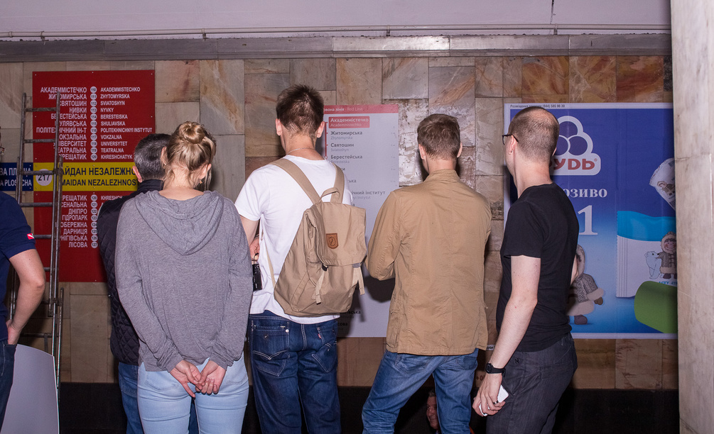

Проект почався з того, що у лютому 2015-го до нас звернулися представники метрополітену з проханням оновити дизайн і наповнення інформаційних стендів в залах станцій (так-так, тих, що з 3D-моделями та фотографією «Іподрома» на всіх станціях).
У процесі короткого обговорення задачі ми вирішили, що за нинішніх обставин такі зміни не принесуть майже ніякої користі пасажирам — проблема набагато більш комплексна і необхідно змінювати всю систему навігації в метро.
Для пілотного проекту було обрано вузол «Хрещатик» — «Майдан Незалежності».
Проблема нинішньої системи навігації полягає в тому, що ніякої системи немає — є певна кількість знаків, що здебільшого розташовані досить необдумано та випадково. Комфортно та швидко орієнтуватися в метро ці знаки не дозволяють, оскільки вони часто не відповідають на питання пасажирів у певній точці, їх важко зчитувати через недбале оформлення, вони губляться серед реклами.
Та основна проблема — ці знаки не складають єдиної системи — у різних місцях вони «розмовляють» з пасажирами різними мовами. На деяких станціях виходи пронумеровано, а на інших — ні; кольори на знаках використовуються як для позначення гілок метро, так і просто для того, щоб зробити знаки «цікавішими». І таких прикладів досить багато — щоразу пасажиру доводиться здогадуватись, на що натякає те чи інше рішення.
Зараз наше метро виглядає ось так
Як було задумано архітекторами
Викликів у цьому проекті хоч відбавляй. Перш за все, нам потрібно було підібрати методи та інструменти, які б дозволили спроектувати та реалізувати якісну систему навігації. Проект дуже нестандартний, тож нам довелося адаптувати знайомі дизайн-процеси та методики у відповідності до специфіки цього проекту та багато імпровізувати.
Велику кількість обмежень на можливі рішення накладають особливості нашого метро: нам потрібно враховувати архітектуру станцій, різноманіття їхніх типів та планувань, дві системи письма — кирилицю та латиницю. Окрім того, нам належало вирішити питання менеджменту проекту і розробити методи керування командою та постановки задач.
Конструктивна різноманітність станцій Київського метро
Щоб поринути у контекст повною мірою, ми багато спостерігали за пасажирами у метро, фотографували та знімали відео, спілкувалися з робітниками станції. Це дозволило нам виявити ключові патерни поведінки та зрозуміти деякі проблеми, а фотографії станцій дають нам змогу дивитись на потрібні точки, знаходячись за комп’ютером, та швидко «приміряти» наші рішення.
Наприклад, ми зрозуміли, що мало хто орієнтується, де який перехід з «Хрещатику» на «Майдан» — довгий чи короткий. Велика кількість людей йде до одного з ескалаторів на станції «Хрещатик» навмання, щоб зрозуміти, що це за вихід — на вулицю Хрещатик чи на Городецького і Інститутську, а потім мусять вертатись до іншого виходу.
Аналіз сценаріїв виходу з «Майдану Незалежності» («труби») та визначення точок прийняття рішень
Ми все ще розглядаємо кілька напрямків та принципово різних рішень тих чи інших задач. Кожне з цих рішень має як свої переваги, так і недоліки, тому нам доведеться багато тестувати, щоб обрати найбільш ефективні.
Наприклад, ми схиляємось до того, що навігаційні знаки матимуть чорне тло, оскільки в такому разі на лайтбоксах світитимуться саме літери. Це, в свою чергу, повинно покращити швидкість та комфорт зчитування інформації.
Але ми досі не знаємо, як чорні знаки вплинуть на загальний вигляд станцій, та як вони зчитуватимуться, коли не будуть світитись зсередини. Темні знаки успішно використовуються у багатьох метро світу: наприклад, у Барселоні та Лісабоні. Але чи підійде це рішення для Києва, ми дізнаємось завдяки багатьом тестам та примірюванням.
Станція “Paral∙lel”, Барселона | bit.ly/1hJstXs
Eскізи темних знаків для київського метро
Ще одна з «революційних», як для Києва, ідей — зробити на стіні навпроти платформи вертикальний покажчик з переліком станцій замість горизонтального, який використовується зараз.
Це дозволить розмістити набагато більше таких покажчиків вздовж платформи, ніж є зараз, і люди зможуть прочитати перелік, знаходячись у будь-якому місці платформи. Звісно, це рішення ми також будемо тестувати, адже ми поки не розуміємо, наскільки комфортно буде видно такий знак з натовпу людей.
Вертикальний покажчик у лондонському метро. bit.ly/1jISUxR
Звісно, в процесі роботи над проектом ми друкуємо багато прототипів різного ступеня деталізації, щоб зрозуміти, як вони виглядають у реальному розмірі, з якої відстані та наскільки комфортно зчитуються знаки.
Ми вже зробили першу примірку в залі станції «Майдан Незалежності». Це дало змогу більш-менш точно визначити, який кегль ми використовуватимемо у якості основного. Також у результаті примірки та подальших обговорень ми відкинули кілька ідей, які себе не виправдали, і сфокусувались на більш перспективних напрямках.
Найближчим часом нас чекає ще одна примірка-тест ключових знаків у темному та світлому варіантах. Після цього ми зможемо всередині команди затвердити основні принципи та рішення, що використовуватимуться для розробки усіх інших знаків на станції.
Швидке тестування ідеї вертикальної лінійної схеми
Презентація та обговорення рішень в команді
Коли звичайні люди сплять, ми робимо примірку покажчиків
Щоб мінімізувати ризик заміни непрацюючої системи навігації погано працюючою, ми вирішили впроваджувати нові покажчики чергами, перевіряючи рішення у реальних умовах. Кожна черга забезпечуватиме комфортне проходження одного або декількох логічно завершених сценаріїв.
Наразі ми плануємо для забезпечення двох сценаріїв протилежних напрямків:
1. Пасажир зайшов на станцію «Хрещатик»; спустився ескалатором вниз; зрозумів, на яку платформу йому потрібно; вийшов на платформу та поїхав поїздом в правильному напрямку.
2. Пасажир вийшов з поїзду на станції «Хрещатик»; зрозумів, що тут є декілька виходів; зрозумів, який вихід йому потрібен; прийшов до потрібного ескалатора та піднявся на поверхню; вийшов зі станції з чітким розумінням, в який бік йому треба йти.
У цих двох сценаріях задіяно 42 покажчики різних типів, у тому числі мапа міста та “exit guide” (схема виходів з метро).
Наразі ми маємо повний набір покажчиків у світлому та темному варіантах, необхідні для впровадження першої черги. Але перед цим нас чекають ще дві примірки та заплановано дві статті для подальшого публічного обговорення, що, звісно, певним чином вплине на наші остаточні рішення. А далі — тестування у реальних умовах та розробка усіх інших знаків для двох станцій, спираючись на принципи першої черги.
За нашим планом, загалом на станціях буде впроваджено 113 покажчиків різних типів. Детальніше про дизайн-процес ви можете прочитати у статті.